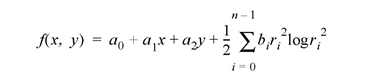

The GRID_TPS function uses thin plate splines to interpolate a set of values over a regular two dimensional grid, from irregularly sampled data values. Thin plate splines are ideal for modeling functions with complex local distortions, such as warping functions, which are too complex to be fit with polynomials.
Given n points, ( x i , y i ) in the plane, a thin plate spline can be defined as:

with the constraints:
where r i 2 = ( x - x i ) 2 + ( y - y i ) 2 . A thin plate spline (TPS) is a smooth function, which implies that it has continuous first partial derivatives. It also grows almost linearly when far away from the points ( x i , y i ). The TPS surface passes through the original points: f ( x i , y i ) = z i .
Note: GRID_TPS requires at least 7 noncolinear points.
Result = GRID_TPS ( Xp , Yp , Values [, COEFFICIENTS = variable ] [, NGRID = [ nx , ny ] ] [, START = [ x0 , y0 ] ] [, DELTA = [ dx , dy ] ] )
An array of dimension ( nx , ny ) of interpolated values. If the values argument is a two-dimensional array, the output array has dimensions ( nz , nx , ny ), where nz is the leading dimension of the values array allowing for the interpolation of arbitrarily sized vectors in a single call. Keywords can be used to specify the grid dimensions, size, and location.
Note: If the Cholesky factorization used within GRID_TPS fails, then Result will be a scalar 0.
A vector of x points.
A vector of y points, with the same number of elements as the Xp argument.
A vector or two-dimensional array of values to interpolate. If values are a two-dimensional array, the leading dimension is the number of values for which interpolation is performed.
A named variable in which to store the resulting coefficients of the thin plate spline function for the last set of Values. The first N elements, where N is the number of input points, contain the coefficients b i , in the previous equation. Coefficients with subscripts n , n +1, and n +2, contain the values of a 0 , a 1 , and a 2 , in the above equation.
A two-element array specifying the grid spacing in X and Y. If this keyword is not specified, or if one of the elements is set equal to zero, the grid spacing is determined from the values of the NGRID and START keywords, according to the following rules:
DELTA 0 = (MAX( Xp ) - START 0 )/(NGRID 0 - 1)
DELTA 1 = (MAX( Yp ) - START 1 )/(NGRID 1 - 1)
DELTA can also be set to a scalar value to be used for the grid size in both X and Y.
A two-element array of the size of the grid to interpolate ( n x , n y ). If a scalar is passed, the value is used for both n x and n y . The default value is [25, 25].
A two-element array of the location of grid point ( x 0 , y 0 ). If a scalar is passed, the value is used for both x 0 and y 0 . The default is the minimum values in the xp and yp arrays.
I. Barrodale, et al, “Note: Warping digital images using thin plate splines”, Pattern Recognition, Vol 26, No. 2, pp 375-376, 1993.
M. J. D. Powell, “Tabulation of thin plate splines on a very fine two-dimensional grid”, Report No. DAMTP 1992/NA2, University of Cambridge, Cambridge, U.K. (1992).
The following example creates a set of 25 random values defining a surface on a square, 100 units on a side, starting at the origin. Then, we use GRID_TPS to create a regularly gridded surface, with dimensions of 101 by 101 over the square, which is then displayed. The same data set is then interpolated using TRIGRID, and the two results are displayed for comparison.
;X values
x = RANDOMU(seed, 25) * 100
;Y values
y = RANDOMU(seed, 25) * 100
;Z values
z = RANDOMU(seed, 25) * 10
z1 = GRID_TPS(x, y, z, NGRID=[101, 101], START=[0,0], DELTA=[1,1])
;Show the result
SHADE_SURF, z1, TITLE='TPS'
;Grid using TRIGRID
TRIANGULATE, x, y, tr, bounds
z2 = TRIGRID(x, y, z, tr, [1,1], [0,0,100, 100], $
EXTRAPOLATE=bounds)
;Show triangulated surface
SHADE_SURF, z2, TITLE='TRIGRID - Quintic'
|
5.2 |
Introduced |
MIN_CURVE_SURF
,
“Curve and Surface Fitting” (Chapter 7,
Using IDL
) in the
help/pdf
directory of the IDL installation directory.